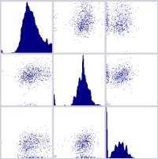
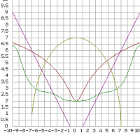
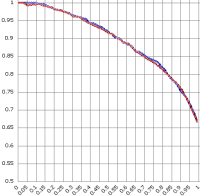
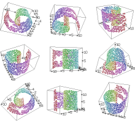
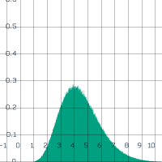

Documentation
Change Log
Download
Forums
Main Developer:
Mike Gashler

Thanks to everyone who has made contributions to this project, including:
- Desire' Gashler
- Kevin Kemp
- Helaman Ferguson
- Roger Pack
- Marcelo Hashimoto
- Eric Moyer
- Jean-Pierre Moreau
- Olaf Krzikalla
- Ivan Yanikov
- Greg Sharp
I learned about machine learning at:

Hosting provided by:

Graphics built with:

Licensed under the LGPL:

Image compression by:

|
Some Quick Examples of using Waffles:
|
Task
|
Results
|
The Waffles tools mostly work with .arff files. Let's say you have a database or a spreadsheet
that can export to comma-separated-values, and you want to convert it to a .arff file.
Command:
waffles_transform import mydata.csv > mydata.arff
|
mydata.arff
|
You might want to see some quick stats about a dataset.
Command:
waffles_plot stats iris.arff
|
Filename: iris.arff
Patterns: 150
Attributes: 5 (Continuous:4, Nominal:1)
1) sepallength, Type: Continuous,
Mean:5.8433, Dev:0.82807,
Min:4.3, Max:7.9, Missing:0
2) sepalwidth, Type: Continuous,
Mean:3.054, Dev:0.43359,
Min:2, Max:4.4, Missing:0
3) petallength, Type: Continuous,
Mean:3.7587, Dev:1.7644,
Min:1, Max:6.9, Missing:0
4) petalwidth, Type: Continuous,
Mean:1.1987, Dev:0.76316,
Min:0.1, Max:2.5, Missing:0
5) class, Type: Nominal, Values:3,
Most Common:Iris-setosa (33.33%),
Entropy: 1.585, Missing:0
|
Another quick way to look at a dataset is to look at a matrix of pair-wise plots and look for
correlated attributes. (Obviously every attribute is correlated with itself, so we show histograms
of the attributes along the diagonal.) Only a small part of the plot is actually shown here.
Command:
waffles_plot overview diabetes.arff
|

|
Now, let's use attribute selection to produce a ranked list of the attributes from most to least salient.
Command:
waffles_transform attributeselector diabetes.arff
|
Attribute rankings:
1 'plas'
5 'mass'
6 'pedi'
0 'preg'
2 'pres'
4 'insu'
7 'age'
3 'skin'
|
Maybe you'll need to tweak your dataset. You can drop columns, swap columns, fill in missing values, sort in a particular column, shuffle rows, and numerous other useful transformations.
Command:
waffles_transform dropcolumns diabetes.arff 0,2-5,7
waffles_transform swapcolumns mydata.arff 0 3
waffles_transform replacemissingvalues mydata.arff
waffles_transform sortcolumn mydata.arff 2
waffles_transform shuffle mydata.arff
|
|
We'll train a decision tree using zoo.arff (ignoring column 0), and then display the trained model.
Command:
waffles_learn train zoo.arff -ignore 0 decisiontree > dt.twt
waffles_plot printdecisiontree dt.twt zoo.arff -ignore 0
|
What is the value of eggs?
false -> What is the value of toothed?
false -> What is the value of aquatic?
false -> What is the value of fins?
false -> type=invertebrate
true -> type=insect
true -> type=invertebrate
true -> type=insect
true -> What is the value of venomous?
false -> What is the value of airborne?
false -> type=reptile
true -> What is the value of feathers?
false -> type=reptile
true -> type=amphibian
true -> type=fish
...
|
Now, let's test some supervised learning algorithms. We'll use 50x2 cross-validation to test
the predictive accuracy of various models on the iris dataset. We'll do it with
baseline (which always predicts the most common class), a decision tree,
an ensemble of 30 decision trees, a 3-NN instance learner, a 5-NN instance learner,
naive bayes, a perceptron, and a neural network with one hidden layer of 4 nodes.
(Some other models are available that are not demonstrated here. Some of our models are
better than others for certain tasks, but all of them can be used for classification
or regression, and all of them will support nominal and/or continuous values automatically.)
Command:
waffles_learn crossvalidate -reps 50 -folds 2 iris.arff baseline
waffles_learn crossvalidate -reps 50 -folds 2 iris.arff decisiontree
waffles_learn crossvalidate -reps 50 -folds 2 iris.arff bag 30 decisiontree end
waffles_learn crossvalidate -reps 50 -folds 2 iris.arff knn 3
waffles_learn crossvalidate -reps 50 -folds 2 iris.arff knn 5
waffles_learn crossvalidate -reps 50 -folds 2 iris.arff naivebayes
waffles_learn crossvalidate -reps 50 -folds 2 iris.arff neuralnet
waffles_learn crossvalidate -reps 50 -folds 2 iris.arff neuralnet -addlayer 4
|
0.2956
0.9344
0.9453
0.9569
0.9628
0.9340
0.9253
0.9512
|
In this example, we will train a neural network with two hidden layers (each with 4 nodes). We will save the trained model to a file (model.twt). Then, we'll load that model
from the file and use it to predict labels for all the patterns in a test set.
Command:
waffles_learn train train.arff neuralnet -addlayer 4 -addlayer 4 > model.twt
waffles_learn predict model.twt test.arff > predictions.arff
|
|
Now, let's train a neural net and plot a visualization of the model space over attributes 2 and 3.
Command:
waffles_learn train -seed 0 iris.arff neuralnet > nn.twt
waffles_plot model nn.twt iris.arff 2 3
|

|
You can use Waffles to plot equations. This is a simple 2D plot of the logistic sigmoid function.
(By default, an image named plot.png is generated. You can view it with your favorite image viewer.)
Command:
waffles_plot equation -range -6 0 6 1 "f1(x) = 1/(1+e^(-x))"
|

|
Let's plot multiple equations together. Notice that I define a helper-function, g(x). Of course you
can use common operations like: abs, acos, acosh, asin, asinh, atan, atanh, ceil, cos, cosh, erf,
floor, gamma, lgamma, log, max, min, sin, sinh, sqrt, tan, and tanh. You can also overload those
operations, define constants, etc.
Command:
waffles_plot equation -range -10 0 10 10 "f1(x)=log(x^2+1)+2;f2(x)=
x^2/g(x)+2;g(m)=10*(cos(m)+pi);f3(x)=sqrt(49-x^2);f4(x)=abs(x)-1"
|

|
Suppose you want to make a precision-recall graph for an ensemble of 100 random decision trees with
the diabetes database. Here's how you could do this. (The horizontal axis shows the recall, and the
vertical axis shows the corresponding precision for each of the labels. Blue shows the precision
when trying to identify class 0, the cases most likely to test negative for diabetes. Red shows the precision
when trying to identify class 1, the cases most likely to test positive for diabetes.)
Command:
waffles_learn precisionrecall diabetes.arff
bag 100 decisiontree -random end > pr.arff
waffles_plot scatter pr.arff -lines
|

|
Let's generate 2000 points that lie on a swiss roll manifold. Since 3D stuff can be hard to visualize
sometimes, we'll plot it from several different points of view.
Command:
waffles_generate swissroll 2000 -cutoutstar -seed 0 > sr.arff
waffles_plot 3d sr.arff -blast -pointradius 300
|

|
Let's project the swiss roll into 2 dimensions using various dimensionality reduction algorithms.
Command:
waffles_transform pca sr.arff 2 > pca.arff
waffles_plot scatter pca.arff -spectrum -aspect -out pca.png
waffles_transform isomap sr.arff kdtree 14 2 > isomap.arff
waffles_plot scatter isomap.arff -spectrum -aspect -out isomap.png
waffles_transform lle sr.arff kdtree 14 2 > lle.arff
waffles_plot scatter lle.arff -spectrum -aspect -out lle.png
waffles_transform breadthfirstunfolding sr.arff kdtree 14 2 -reps 20 > bfu.arff
waffles_plot scatter bfu.arff -spectrum -aspect -out bfu.png
waffles_transform manifoldsculpting sr.arff kdtree 14 2 > ms.arff
waffles_plot scatter ms.arff -spectrum -aspect -out ms.png
|


|
Suppose you are familiar with Octave (or Matlab), but you want to use Waffles to
do something to your data. Here's how you could do it. First, export your data, y, from Octave:
save -ascii y.txt y
Next, convert it to ARFF format:
waffles_transform import y.txt -whitespace > y.arff
Now, use Waffles to transform your data:
waffles_transform breadthfirstunfolding y.arff kdtree 18 2 -reps 20 > x.arff
Convert it back to the Octave format:
waffles_transform export x.arff -tab > x.txt
Finally, go back into Octave and load your data:
load x.txt
|
We'll draw 1 million random values from a gamma distribution (alpha=9, beta=2) and then plot a
histogram of those values. Other supported distributions include:
beta, binomial, cauchy, chisquare, exponential, f, gamma, gaussian, geometric, logistic, lognormal,
normal, poisson, softimpulse, spherical, student, uniform, weibull.
Command:
waffles_generate noise 1000000 -seed 0 -dist gamma 9 2 > gamma.arff
waffles_plot histogram gamma.arff
|

|
If you don't know which algorithm to use, but you've got cycles to burn,
you can put all your favorite algorithms in a bucket, and it will use
cross-validation-selection to pick the best one for every problem.
waffles_learn splittest -trainratio 0.3 data.arff bucket knn 5
neuralnet decisiontree naivebayes end
In this example, we make a bag of 50 buckets, each containing two
types of trees. This is a powerful ensemble.
waffles_learn splittest -trainratio 0.2 data.arff bag 50 bucket
decisiontree meanmarginstree end end
|
|
Some algorithms have no internal model, so they cannot be trained, but
they can still transduce. Here we measure the transductive accurace of
3 transduction algorithms.
Command:
waffles_learn transacc train.arff test.arff agglomerativetransducer
waffles_learn transacc train.arff test.arff graphcuttransducer 5
waffles_learn transacc train.arff test.arff neighbortransducer 5
|
|
Matrix operations are also supported. For example, let's compute C=ATB†.
Command:
waffles_transform transpose a.arff > a_trans.arff
waffles_transform pseudoinverse b.arff > b_inv.arff
waffles_transform multiply a_trans.arff b_inv.arff > c.arff
|
|
Perhaps you'd like to do some text mining. Suppose you have two folders that contain a mixture
of text and html documents. The docs in folder1 belong to class 1, and the docs in folder2 belong
to class 2. We'll convert all of these documents to a labeled sparse matrix. Then, we'll shuffle
the data and split it into two datasets. Next, we'll train naive bayes using part of the sparse
matrix. Finally we'll predict the other part with our trained model.
Command:
waffles_generate docstosparsematrix -binary folder1 folder2
waffles_transform sparseshuffle docs.sparse > shuffled.sparse
waffles_transform sparsesplit shuffled.sparse 250 train.sparse test.sparse
waffles_learn trainsparse train.sparse naivebayes > model.twt
waffles_learn predictsparse model.twt test.sparse
|
|
Let's cluster some data. First, we'll use a nominaltocat filter to convert it to continuous values,
then we'll cluster with three different algorithms. We'll use 3 clusters in each case.
Command:
waffles_transform nominaltocat mydata.arff > real.arff
waffles_transform agglomerative real.arff 3 > agglomerative.arff
waffles_transform kmeans real.arff 3 > kmeans.arff
waffles_transform kmedoids real.arff 3 > kmedoids.arff
|
|
|
...and lots more.
|
|
|